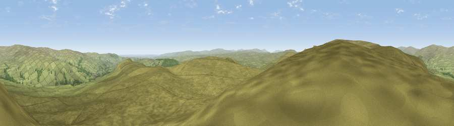

Viewpoint near Newbiggin
#7400 in England · top 13% of its area beats it · near NewbigginThe view, rendered

A 360° render of this exact spot computed from the terrain model, tree cover and land cover — summer colours, afternoon light, calibrated against photographs of famous viewpoints. Real trees, hedges and buildings will differ in detail.
The panorama
Grey silhouette: terrain skyline in each direction (720 bearings, Earth curvature and refraction included). Dashed green: skyline with trees (+15 m) and buildings (+8 m) as obstacles. Blue strip: how far the ground is visible on each bearing.
Where the view opens
Wedge length = distance to the farthest visible ground on that bearing (vegetation-aware). Rings at 10, 25 and 50 km.
What fills the view
97% grassland · 2% woodland
Angular shares of the visible panorama (visual magnitude), not map area. Landscape diversity 0.07 (0–1 Shannon).
Key numbers
More beautiful places nearby
The staircase of upgrades: each row has a higher view potential than everything closer. Driving times are estimates from straight-line distance, calibrated against real road routing — check an actual route before setting out.
| Place | Direction | Drive | Score |
|---|---|---|---|
| Viewpoint near Middleton-in-Teesdale | SSE · 2 km | ~5 min | 67.9 |
| Viewpoint near Middleton-in-Teesdale | ESE · 2 km | ~6 min | 70.2 |
| Viewpoint c10501_7697 | W · 5 km | ~12 min | 70.9 |
| Viewpoint c10490_7651 | W · 8 km | ~16 min | 74.4 |
| Mickle Fell | W · 10 km | ~19 min | 75.8 |
| Viewpoint near Eggleston | E · 11 km | ~21 min | 76.0 |
| Great Dun Fell | WNW · 21 km | ~35 min | 77.8 |
| Little Dun Fell | WNW · 22 km | ~36 min | 78.4 |
54.61399, -2.14977 · source: screening · position refined by local search. Computed location — check access rights before visiting.